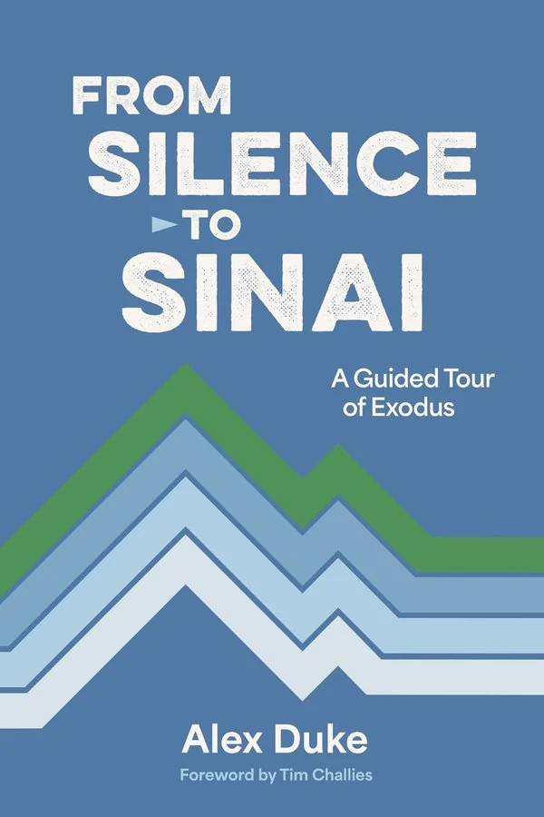

Zondervan Reflective · New release
From Silence to Sinai
A Guided Tour of Exodus
Zondervan Reflective · Biblical Studies
Released November 10, 2026 · ISBN 9780310175087
About the book
Duke guides readers through Exodus, from God's silence at its opening through the plagues and the rescue from Egypt to the giving of the law at Sinai. He is senior editor of 9Marks and a pastor at Third Avenue Baptist Church in Louisville.
← Back to the calendar Get the weekly email
Disclosure: The Picky Reader may earn a commission from purchases made through our links, at no extra cost to you.